-
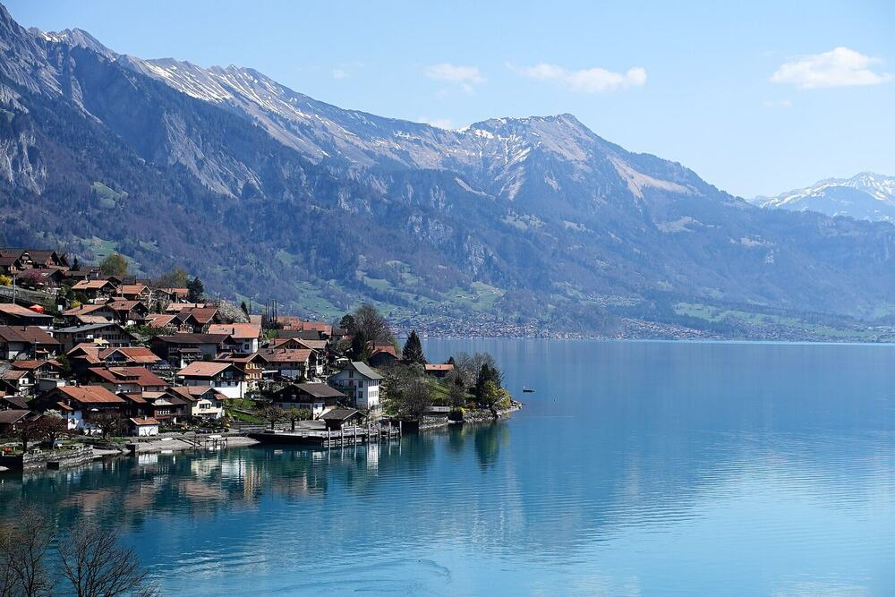
Lake Brienz water temperature today, and where the figure comes from
Lake Brienz water temperature 70 cm below the surface, for the 4 beaches we follow, updated every three hours. Where the figure comes from and what it does not tell you.
Read the article → -
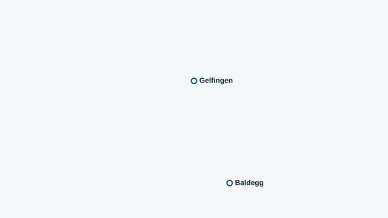
Where to swim in Lake Baldegg: both beaches, with the morning water temperature
The 2 beaches followed on Lake Baldegg: full list with the morning water temperature, where to eat and drink, where to rent a boat or paddleboard.
-
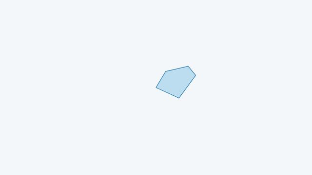
Where to swim in Lake Constance – Untersee: all 4 beaches, with the morning water temperature
The 4 beaches followed on Lake Constance – Untersee: full list with the morning water temperature, where to eat and drink, where to rent a boat or paddleboard.
-
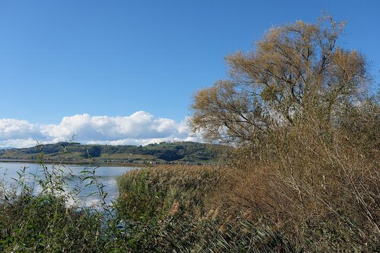
Lake Murten water temperature today, beach by beach
Lake Murten water temperature 70 cm below the surface, in front of each of the 4 beaches we follow, updated every three hours. Where the figure comes from and what it does not tell you.
-
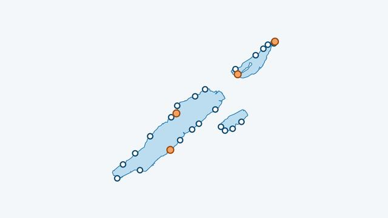
Winter swimming in Lakes Neuchâtel, Biel and Murten: beaches and saunas
Winter swimming in Lakes Neuchâtel, Biel and Murten: the Swiss Lifesaving Society’s time rule, today’s water beach by beach, the beaches we follow and the lakeside saunas.
-
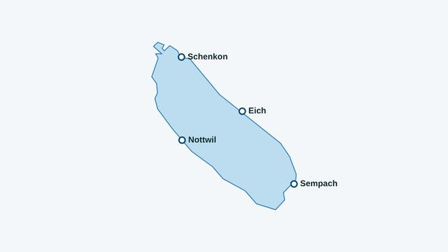
Where to swim in Lake Sempach: all 4 beaches, with the morning water temperature
The 4 beaches followed on Lake Sempach: full list with the morning water temperature, where to eat and drink, where to rent a boat or paddleboard.
-
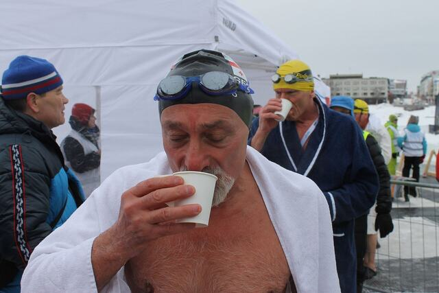
Afterdrop: why you feel colder after a winter swim, and how to warm up
Why your body keeps cooling for about ten minutes after getting out, how to change, what to drink, and what to avoid, such as a hot shower.
-
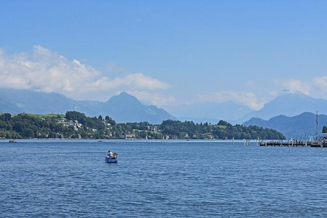
Lake Lucerne water temperature today, beach by beach
Lake Lucerne water temperature 70 cm below the surface, in front of each of the 18 beaches we follow, updated every three hours. Where the figure comes from and what it does not tell you.
-
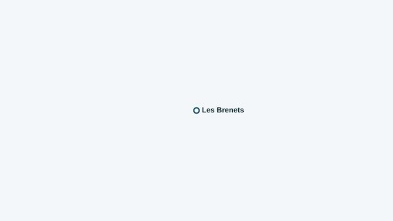
Where to swim in Lac des Brenets: the beach, with the morning water temperature
The beach followed on Lac des Brenets: full list with the morning water temperature, where to eat and drink, where to rent a boat or paddleboard.
-
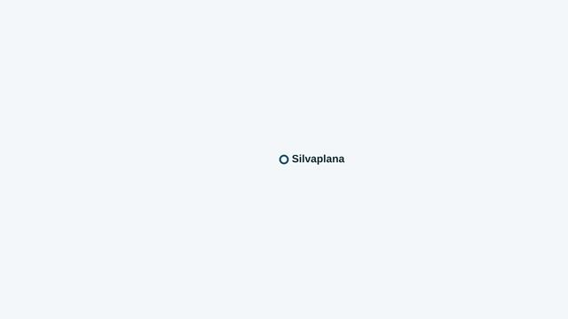
Where to swim in Lake Silvaplana: the beach, with the morning water temperature
The beach followed on Lake Silvaplana: full list with the morning water temperature, where to eat and drink, where to rent a boat or paddleboard.
-
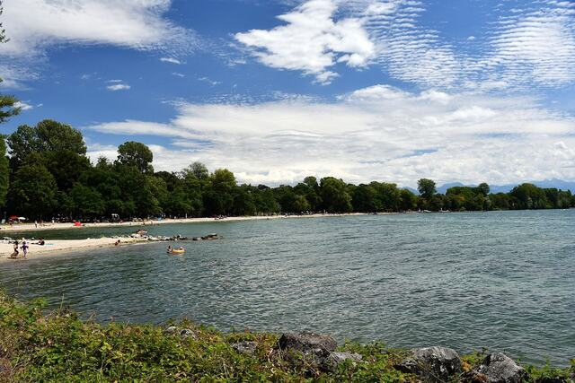
Bathing water quality in Lake Geneva: how to know if you can swim
Who tests the water at Lake Geneva’s beaches, how to read the ratings, and why an August test says nothing about the water in November.
-
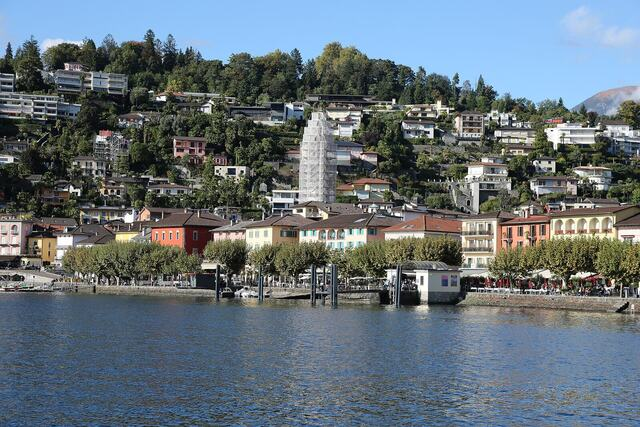
Lake Maggiore water temperature today, and where the figure comes from
Lake Maggiore water temperature 70 cm below the surface, for the 7 beaches we follow, updated every three hours. Where the figure comes from and what it does not tell you.
-
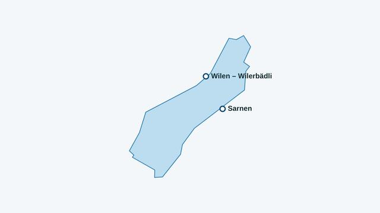
Where to swim in Lake Sarnen: both beaches, with the morning water temperature
The 2 beaches followed on Lake Sarnen: full list with the morning water temperature, where to eat and drink, where to rent a boat or paddleboard.
-
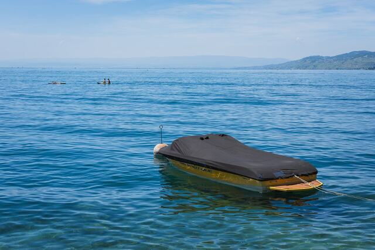
Wakeboarding, wakesurfing and water-skiing on Lake Geneva: schools and clubs
From Pregny to Thonon, the schools and clubs that take the boat out for wakeboarding, wakesurfing and water-skiing, and why you need a glassy lake.
-
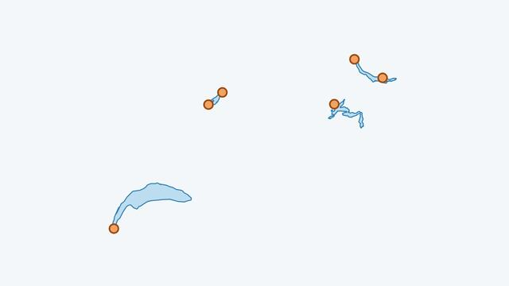
Floating saunas and sauna boats in Switzerland: 6 places on four lakes
Sauna boats and sauna rafts on Lake Geneva, Lake Biel, Lake Zurich and Lake Lucerne: 6 places with departure point and booking site.
-
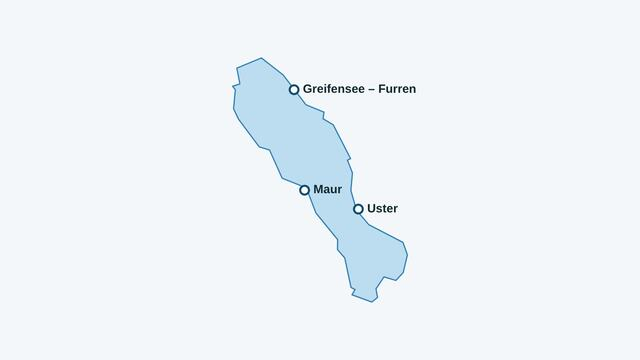
Where to swim in Lake Greifen: all 3 beaches, with the morning water temperature
The 3 beaches followed on Lake Greifen: full list with the morning water temperature, where to eat and drink, where to rent a boat or paddleboard.
-
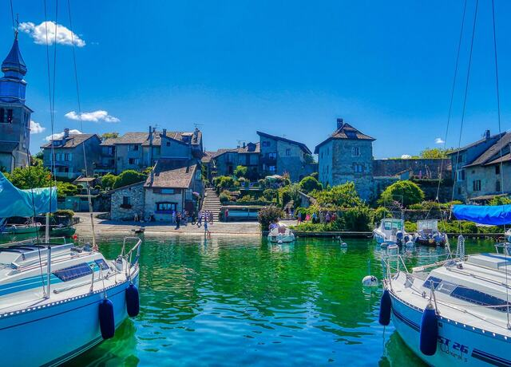
Lake Geneva beaches on the French side: from Évian to Chens-sur-Léman
Beaches on the French shore of Lake Geneva, from Meillerie to Chens-sur-Léman, with today’s water temperature, restaurants and wake schools nearby.
-
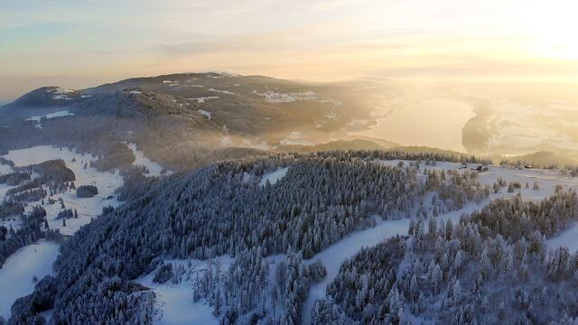
Lac de Joux water temperature today, beach by beach
Lac de Joux water temperature 70 cm below the surface, in front of each of the 2 beaches we follow, updated every three hours. Where the figure comes from and what it does not tell you.
-
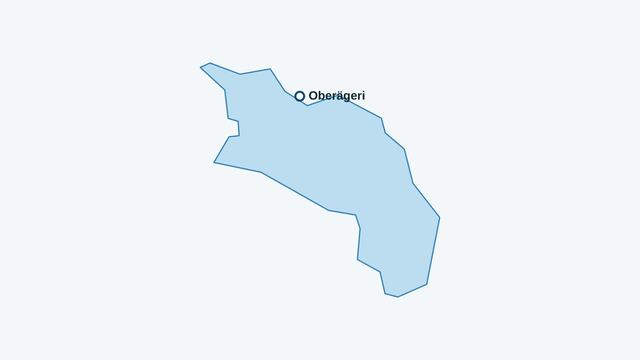
Where to swim in Lake Ägeri: the beach, with the morning water temperature
The beach followed on Lake Ägeri: full list with the morning water temperature, where to eat and drink, where to rent a boat or paddleboard.
-
Where to swim at the Domaine des Îles (Sion): the beach, with the morning water temperature
The beach followed at the Domaine des Îles (Sion): full list with the morning water temperature, where to eat and drink, where to rent a boat or paddleboard.
-
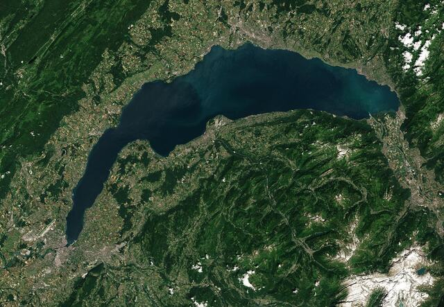
Lake Geneva water temperature: where the figures come from and why they vary
How Lake Geneva’s water is calculated 70 cm below the surface in front of each beach, why it can drop several degrees in two days, and where to check it live.
-
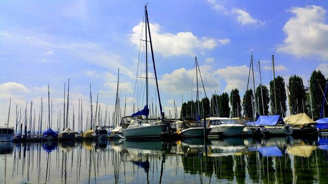
Lake Constance water temperature today, and where the figure comes from
Lake Constance water temperature 70 cm below the surface, for the 12 beaches we follow, updated every three hours. Where the figure comes from and what it does not tell you.
-
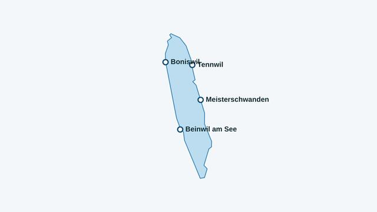
Where to swim in Lake Hallwil: all 4 beaches, with the morning water temperature
The 4 beaches followed on Lake Hallwil: full list with the morning water temperature, where to eat and drink, where to rent a boat or paddleboard.
-
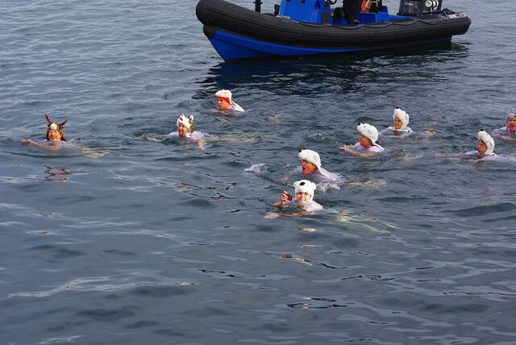
Winter swimming kit: the complete list before heading to Lake Geneva
Cap, neoprene socks and gloves, swim buoy, changing mat, robe and flask: everything to bring for a winter swim in Lake Geneva, and why.
-
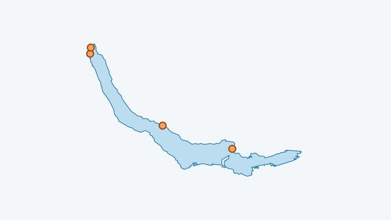
Saunas on Lake Zurich: 4 places, from the city to Rapperswil
The 4 Lake Zurich saunas followed by My Lake: the Seebad Enge sauna, Seesauna Stäfa and sauna boats. Location, season and a link to each site.
-
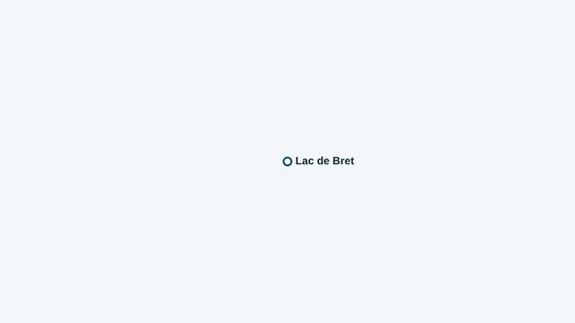
Where to swim in Lac de Bret: the beach, with the morning water temperature
The beach followed on Lac de Bret: full list with the morning water temperature, where to eat and drink, where to rent a boat or paddleboard.
-
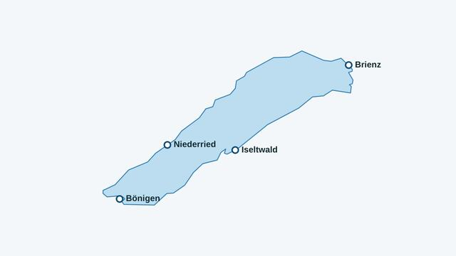
Where to swim in Lake Brienz: all 4 beaches, with the morning water temperature
The 4 beaches followed on Lake Brienz: full list with the morning water temperature, where to eat and drink, where to rent a boat or paddleboard.
-
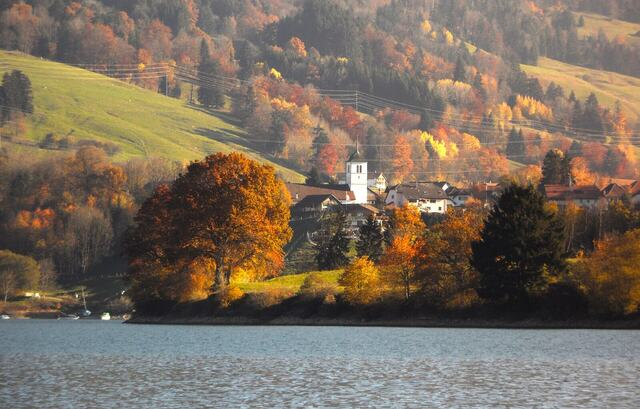
Lake Gruyère water temperature today, and where the figure comes from
Lake Gruyère water temperature 70 cm below the surface, for the 5 beaches we follow, updated every three hours. Where the figure comes from and what it does not tell you.
-
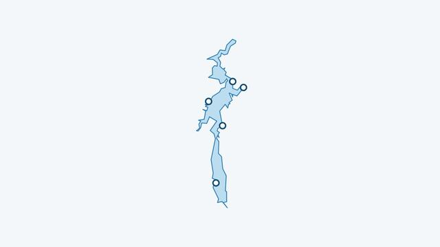
Where to swim in Lake Gruyère: all 5 beaches, with the morning water temperature
The 5 beaches followed on Lake Gruyère: full list with the morning water temperature, where to eat and drink, where to rent a boat or paddleboard.
-
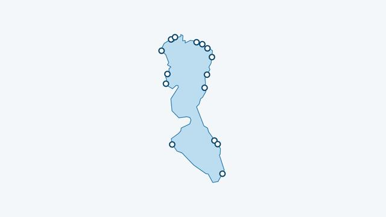
Where to swim in Lake Zug: all 15 beaches, with the morning water temperature
The 15 beaches followed on Lake Zug: full list with the morning water temperature, where to eat and drink, where to rent a boat or paddleboard.
-
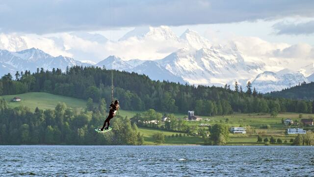
Kitesurfing, windsurfing and wing foiling on Lake Geneva: the right wind and the right spots
How much wind for kitesurfing, windsurfing and foiling on Lake Geneva, why the bise makes the best downwinders, and where to rent or learn.
-
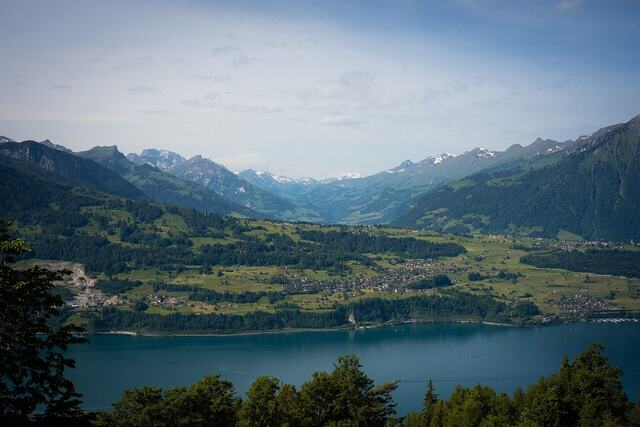
Lake Thun water temperature today, and where the figure comes from
Lake Thun water temperature 70 cm below the surface, for the 8 beaches we follow, updated every three hours. Where the figure comes from and what it does not tell you.
-
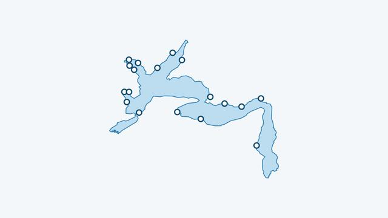
Where to swim in Lake Lucerne: all 18 beaches, with the morning water temperature
The 18 beaches followed on Lake Lucerne: full list with the morning water temperature, where to eat and drink, where to rent a boat or paddleboard.
-
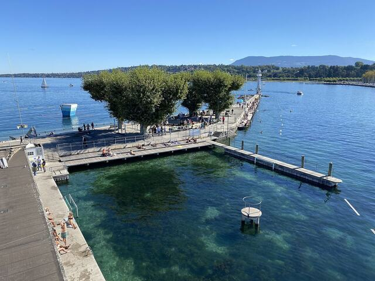
Where to swim in Geneva: every beach in the canton
From the Bains des Pâquis to Hermance, Geneva’s Lake Geneva beaches with their cafés, and today’s water temperature for each one.
-
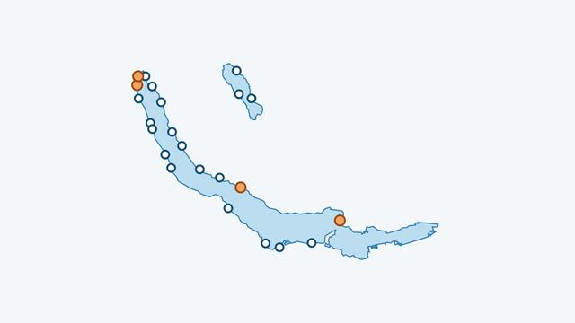
Winter swimming in Zurich: lake beaches, today’s water and saunas to warm up
Winter swimming in Lake Zurich and Greifensee: the Swiss Lifesaving Society’s time rule, today’s water beach by beach, the beaches we follow and the lakeside saunas.
-
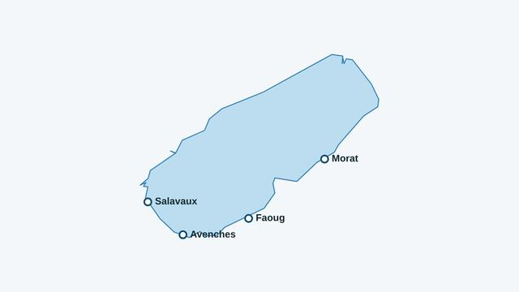
Where to swim in Lake Murten: all 4 beaches, with the morning water temperature
The 4 beaches followed on Lake Murten: full list with the morning water temperature, where to eat and drink, where to rent a boat or paddleboard.
-
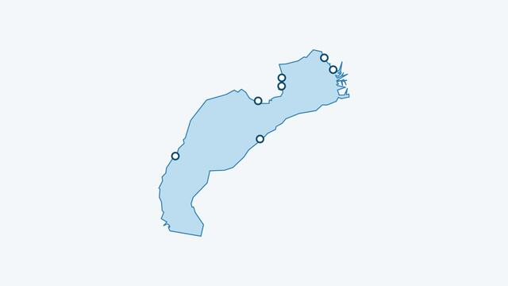
Where to swim in Lake Maggiore: all 7 beaches, with the morning water temperature
The 7 beaches followed on Lake Maggiore: full list with the morning water temperature, where to eat and drink, where to rent a boat or paddleboard.
-
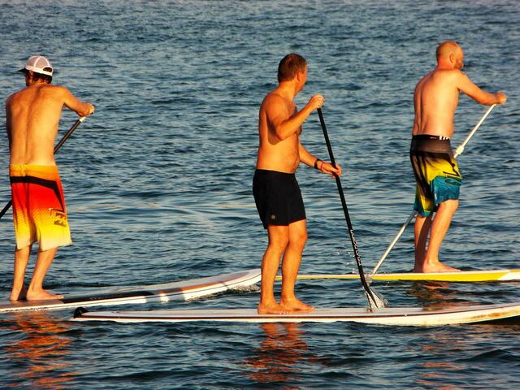
Paddleboarding on Lake Geneva: when the lake is calm enough, and where to rent
At what wind speed paddleboarding gets hard on Lake Geneva, how to read gusts, and paddleboard rentals from Geneva to Saint-Gingolph.
-
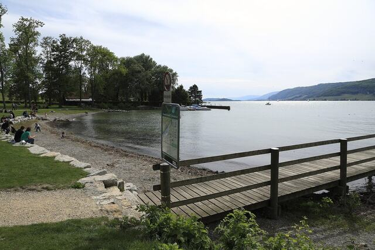
Lake Biel water temperature today, beach by beach
Lake Biel water temperature 70 cm below the surface, in front of each of the 7 beaches we follow, updated every three hours. Where the figure comes from and what it does not tell you.
-
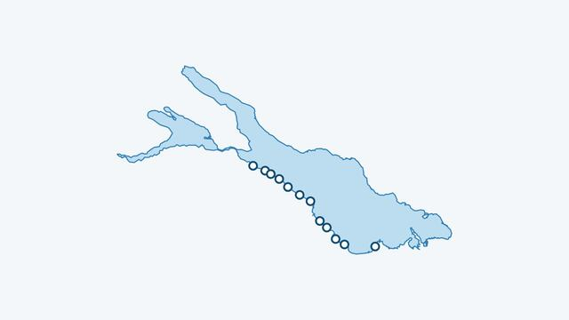
Where to swim in Lake Constance: all 12 beaches, with the morning water temperature
The 12 beaches followed on Lake Constance: full list with the morning water temperature, where to eat and drink, where to rent a boat or paddleboard.
-
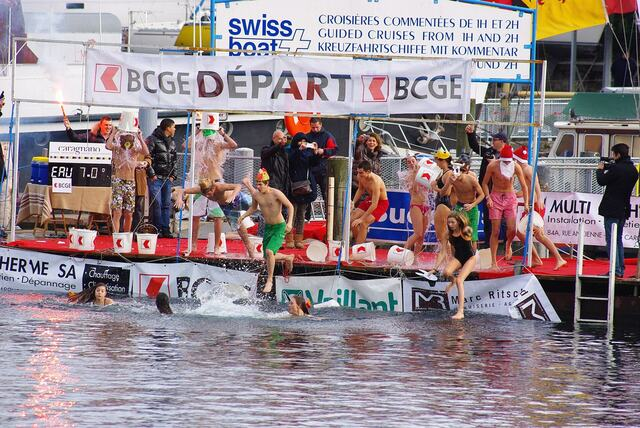
Winter swimming in Lake Geneva: getting started in Geneva and Lausanne
How long to stay in, how to get in, where to swim and warm up in Geneva and Lausanne: a guide to winter swimming in Lake Geneva, with today’s water temperature beach by beach.
-
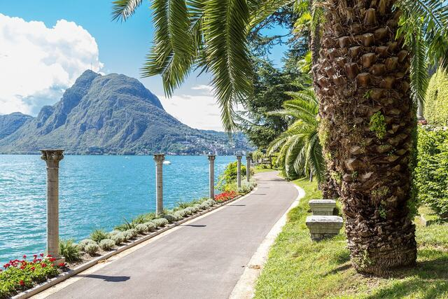
Lake Lugano water temperature today, beach by beach
Lake Lugano water temperature 70 cm below the surface, in front of each of the 14 beaches we follow, updated every three hours. Where the figure comes from and what it does not tell you.
-
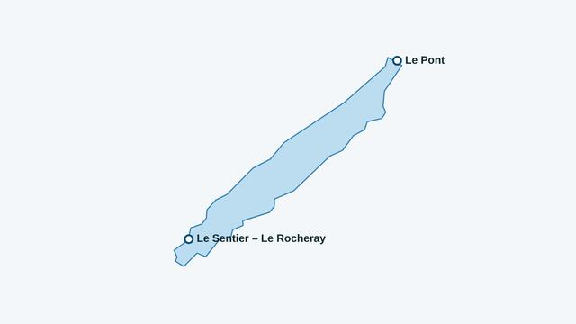
Where to swim in Lac de Joux: both beaches, with the morning water temperature
The 2 beaches followed on Lac de Joux: full list with the morning water temperature, where to eat and drink, where to rent a boat or paddleboard.
-
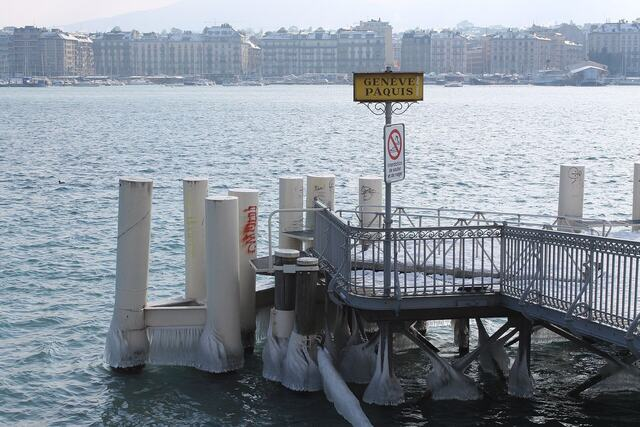
The bise on Lake Geneva: what it means for swimming, paddleboarding and kitesurfing
Where the bise comes from, how to recognise it and when it spoils swimming and paddleboarding, while kitesurfers, windsurfers and foilers wait for it.
-
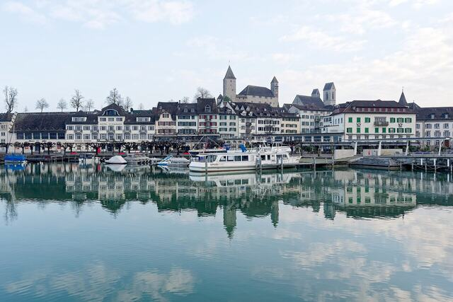
Lake Zurich water temperature today, beach by beach
Lake Zurich water temperature 70 cm below the surface, in front of each of the 20 beaches we follow, updated every three hours. Where the figure comes from and what it does not tell you.
-
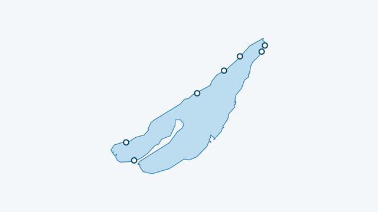
Where to swim in Lake Biel: all 7 beaches, with the morning water temperature
The 7 beaches followed on Lake Biel: full list with the morning water temperature, where to eat and drink, where to rent a boat or paddleboard.
-
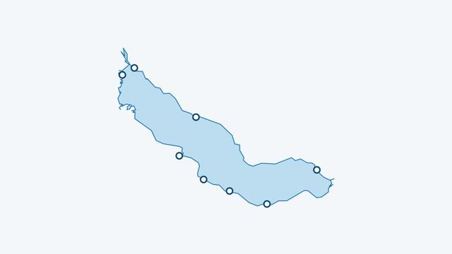
Where to swim in Lake Thun: all 8 beaches, with the morning water temperature
The 8 beaches followed on Lake Thun: full list with the morning water temperature, where to eat and drink, where to rent a boat or paddleboard.
-
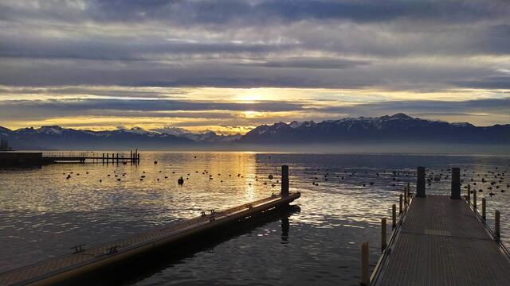
Lakeside cafés and restaurants on Lake Geneva: our feet-in-the-water picks
Waterside terraces in Geneva, La Côte, Lausanne, the Riviera and the French shore, with their opening seasons.
-
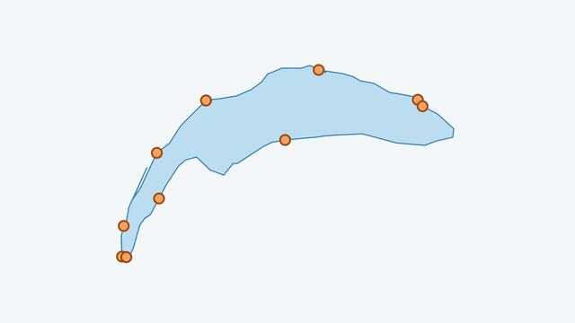
Saunas on Lake Geneva: all 11 places, from Geneva to Vevey
The 11 lakeside saunas on Lake Geneva followed by My Lake: yurts, barrels, a sauna boat, historic baths. Season, location and a link to each one’s website.
-
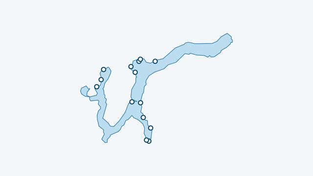
Where to swim in Lake Lugano: all 14 beaches, with the morning water temperature
The 14 beaches followed on Lake Lugano: full list with the morning water temperature, where to eat and drink, where to rent a boat or paddleboard.
-
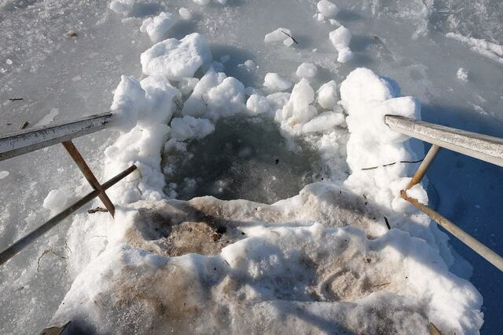
Cold water shock: the first 90 seconds in Lake Geneva’s cold water
What your body does when you enter 10 °C water, why you should not dive in, how to breathe during the first minute, and why to see a doctor before you start.
-
Lake Neuchâtel water temperature today, beach by beach
Lake Neuchâtel water temperature 70 cm below the surface, in front of each of the 15 beaches we follow, updated every three hours. Where the figure comes from and what it does not tell you.
-
Where to swim in Lake Neuchâtel: all 15 beaches, with the morning water temperature
The 15 beaches followed on Lake Neuchâtel: full list with the morning water temperature, where to eat and drink, where to rent a boat or paddleboard.
-
Where to swim in Lake Zurich: all 20 beaches, with the morning water temperature
The 20 beaches followed on Lake Zurich: full list with the morning water temperature, where to eat and drink, where to rent a boat or paddleboard.